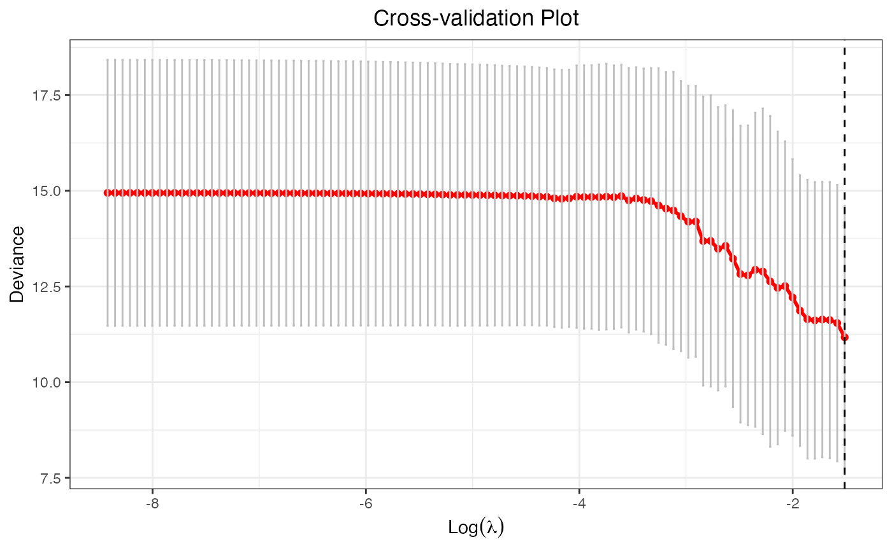
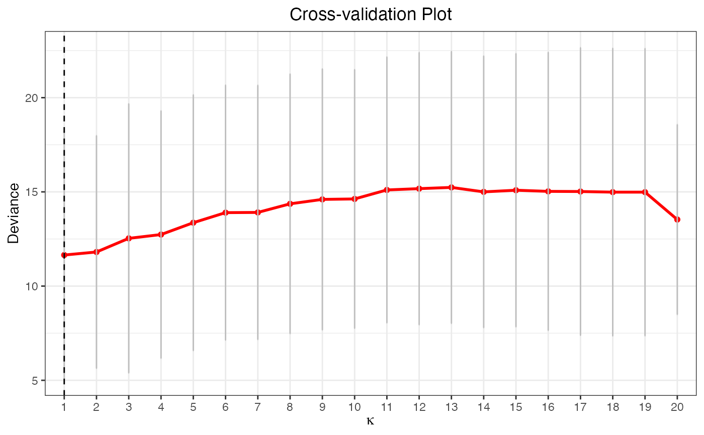
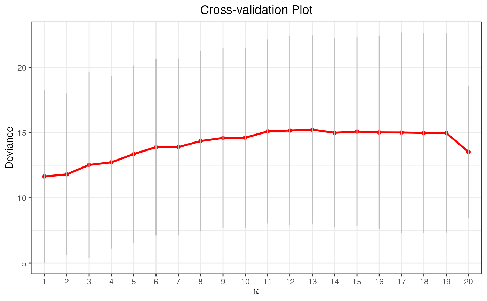
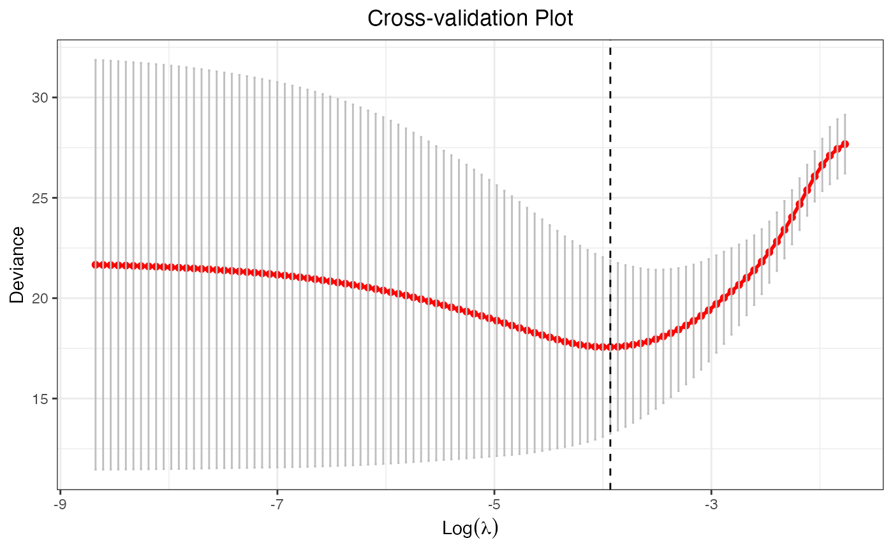

Plot Method for a "cv.glmtlp" Object
plot.cv.glmtlp.RdPlots the cross-validation curve, and the upper and lower standard deviation
curves, as a function of the lambda or kappa values.
Usage
# S3 method for class 'cv.glmtlp'
plot(x, vertical.line = TRUE, ...)Details
The generated plot is a ggplot object, and therefore, the users are able
to customize the plots following the ggplot2 syntax.
References
Shen, X., Pan, W., & Zhu, Y. (2012).
Likelihood-based selection and sharp parameter estimation.
Journal of the American Statistical Association, 107(497), 223-232.
Shen, X., Pan, W., Zhu, Y., & Zhou, H. (2013).
On constrained and regularized high-dimensional regression.
Annals of the Institute of Statistical Mathematics, 65(5), 807-832.
Li, C., Shen, X., & Pan, W. (2021).
Inference for a Large Directed Graphical Model with Interventions.
arXiv preprint arXiv:2110.03805.
Yang, Y., & Zou, H. (2014).
A coordinate majorization descent algorithm for l1 penalized learning.
Journal of Statistical Computation and Simulation, 84(1), 84-95.
Two R package Github: ncvreg and glmnet.
Author
Chunlin Li, Yu Yang, Chong Wu
Maintainer: Yu Yang yang6367@umn.edu
Examples
X <- matrix(rnorm(100 * 20), 100, 20)
y <- rnorm(100)
cv.fit <- cv.glmtlp(X, y, family = "gaussian", penalty = "tlp")
plot(cv.fit)

plot(cv.fit, vertical.line = FALSE)
cv.fit2 <- cv.glmtlp(X, y, family = "gaussian", penalty = "l0")
plot(cv.fit2)

plot(cv.fit2, vertical.line = FALSE)

data("gau_data")
cv.fit <- cv.glmtlp(gau_data$X, gau_data$y, family = "gaussian", penalty = "tlp")
plot(cv.fit)
data("bin_data")
cv.fit <- cv.glmtlp(bin_data$X, bin_data$y, family = "binomial", penalty = "l1")
plot(cv.fit)
